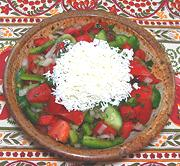

|
Shopska Salad - SovietBalkan Region - Shopska Salata | ||||
| Serves: Effort: Sched: DoAhead: |
6 salad ** 2+ hrs Most |
This salad recipe was composed (along with several others that didn't catch on) in the 1960s by Balkantourist in Bulgaria. It quickly spread through the entire Soviet Balkan region. | |||
| Proportions of the ingredients vary throughout the region. It appears to be a variation on Bulgarian Shopska which it has pretty much replace, even in Bulgaria. It is also known as "Bulgarian salad". Note that I have two very authoritative recipes with no cucumbers. | |||||
|
6 1/3 1-1/4 12 6 3 ------ 1/4 1/4 2-1/2 2-1/2 ------ 10 |
oz t # oz oz T --- t t T T --- oz |
Cucumbers (1) Salt Tomatoes, ripe Sweet Peppers (2) Onions Parsley -- Dressing Salt Pepper Oil (3) Wine Vinegar (4) -- Garnish Sirene Cheese (5) |
Make: - (2+ hrs - 35 min work)
|